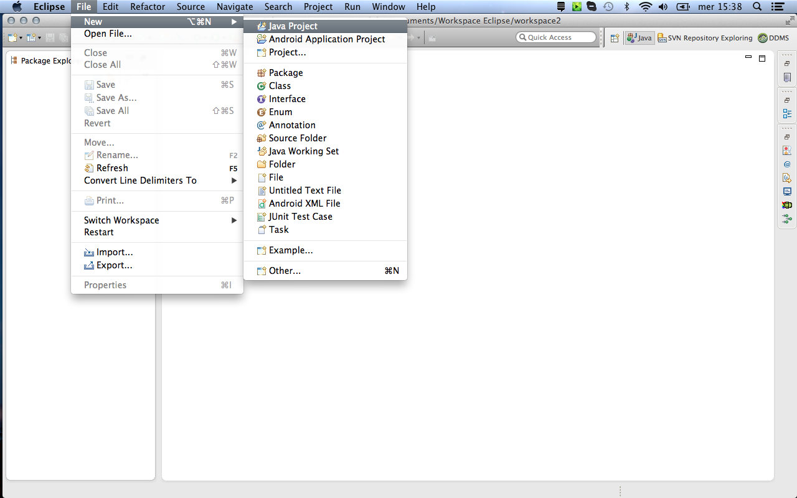

Package Index
Introduction
The DQuid Client APIs goal is to enable the visualization of data read from a vehicle toward the DQuid unit on a generic Smartphone.
They comprehend an Android Library Project that you need to include to your Android Application Project.
Java Compatibility
These APIs were compiled used Java SE 1.6
Installation
In order to make the APIs work, you have to include the two jar files provided by DQuid as libraries for your application.
A step by step description on how to use the APIs in Eclipse is reported below:
- Open eclipse and select from the main menu "File -> New -> Java Project"
- Select a project name and click "Finish"
- Right click on the project root and "New -> Folder"
- Call it as you wish, let's call it "libs" (it will contail the DQuid Libraries)
Drag & drop the two jars provided by DQuid into this folder
- Select the "Copy files" option and click "OK"
- Let's include these libraries into our project: right click on the project root and "Build Path -> Configure Build Path.."
- Be sure that you are in the "libraries" tab and click on the "Add JARs" button
Select the two jars just copied into the "lib" folder of our project, and click "OK". Then click again in the "OK" buttomn to close the project properties window.
Let's start to use the APIs: right click on the project root and select "New -> Class"
This is the class that will listen to the upcoming events from the unit, let's call it DQuidListener. Click on "Finish" to create the class
Add the "implements DQuidListenerInterface" string and implement all the needed methods (like in the image below).
Write the implementation of these methods as you wish, for a detailed description of each one of them please refer to the documentation.
We need to create the main class of our project, so: right clock on the project root and select "New -> Class"
Let's call it "DQuidMainClass". Select the option "public static void main(String[] args)" to auto-create the main in this new class. Then click "Finish" to actually create it
Inside the "main" method:- Init the APIs calling "UserVehicle.INSTANCE.init" and passing it a new Instance of the DQuidListener class (previously cretaed)
- Set the simulation mode to true (this version of the APIs only supports simulation mode, so it may crash if you miss this statement)
- Connect passing "-1" as a parameter (passing any other value will make the APIs crash);
Now your application project is correctly configured and the APIs are ready to be used.
Overview
The Client APIs package includes:
- DQuidListnerInterface: The interface you need to implement in order to receive data from the APIs
- UserVehicle: A singleton whose instance is accessible through UserVehicle.INSTANCE.
It gives the possibility to init the APIs, (dis)connect and get data from the DQuid unit. - DQuidUtils: It contains signal definitions and some useful methods.
- Data: It represents the main data object sent from the DQuid unit
Change Log:
1.6.1 Release Notes:
This release only works in simulation mode. It may be unstable and/or crash if you do not set the simulation mode to true before the connection. Any feedback is more than welcome
- Three steps connection:
just implement our interface, init the apis and connect. You will immediately receive your data. - Simulation Mode:
Try these APIs without a real connection.
Use "UserVehicle.INSTANCE.setSimulationMode" method and "UserVehicle.INSTANCE.isSimulationModeEnabled" in order to deal with this feature.
Missing/Will be available in next releases:
- Working with real data.
- Car Autorecognition feature
- Serial check
- DQuid Autenthication
- Firmware Update
- Dynamic signal management
- Flight Mode (no need to have an internet connection to use the APIs)
- Manage more DQuid units.
- Google Analytics implementation (in order to have a better feedback about bugs/issues)
- Larger car database
- Various bug fixing
com.dquid.clientapi - Select a project name and click "Finish"